지속성과 전략, 실천과 실패 복기,
시장과 인생을 동시에 다루는 훈련소다.
나는 안 되는 사람을 많이 봤다.
말은 한다. "의지가 약해요." "어떻게 해야 할까요."
그건 말이 아니다. 실행을 하지 않겠다는 선언이다.
"이렇게 해도 안 돼요." "저렇게 해도 안 돼요."
그건 고민이 아니다. 그건 게으름이다.
그런데 나는 그 사람들을 탓하지 않는다.
의지로 되는 일이었으면 애초에 모임 같은 건 필요 없다.
미라클모닝. 5시 기상. 경제적 자유. 디지털 노마드.
나는 이런 단어를 믿지 않는다. 습관 모임이 대부분 실패하는 이유는 단어에 함몰되고 본질을 놓치기 때문이다.
열정이 알아서 공급되는 상위 20퍼센트는 어차피 혼자서도 한다. 문제는 나머지 80퍼센트다. 나를 포함해서.
그래서 만들었다. 2020년 10월이었고, 지금 6년째다.
그게 입구니까. 입구는 두 개뿐이다. 새벽기상과 독서.
일어났다 다시 자는 건 기상이 아니다. 사진 찍고 눕는 인증도 인증이 아니다. 일어난 다음에 뭘 했느냐가 전부다.
책은 읽는 게 아니라 하는 거다.
왜 하필 100일인가.
변화는 순식간에 오지 않는다. 최소 100일은 버텨야 한다.
솔직히 말하면 100일은 오디션이다. 100일을 못 넘기는 사람에게는 그다음을 줄 수가 없다. 줘도 못 쓴다.
열두 개의 방이 돌아간다. 이름은 중요하지 않다. 각각이 사람에게 어떤 환경을 만드는지가 중요하다.
기상
하루의 시작을 남에게 뺏기지 않는 사람이 된다.
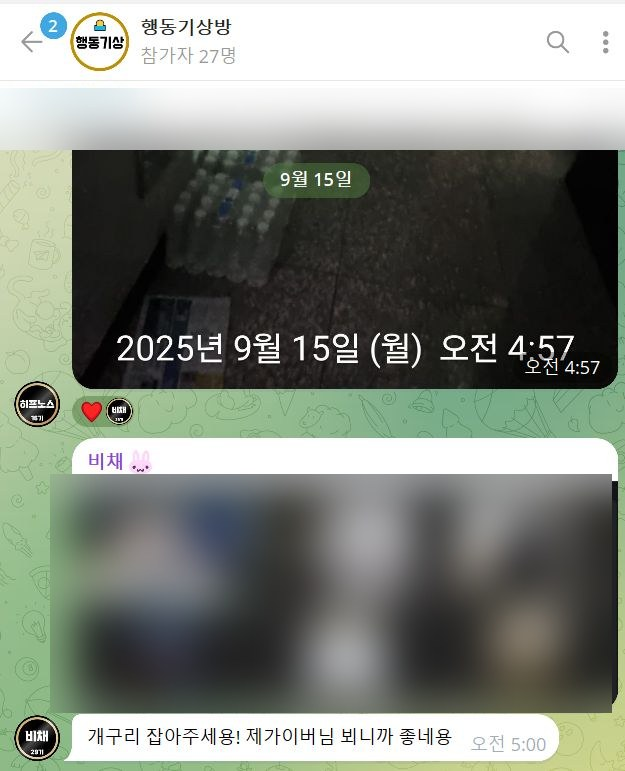
운동 · 식단 · 컨디션
짜증과 무기력의 원인은 대부분 정신이 아니라 체력이다. 체력이 없으면 아무것도 오래 못 한다.
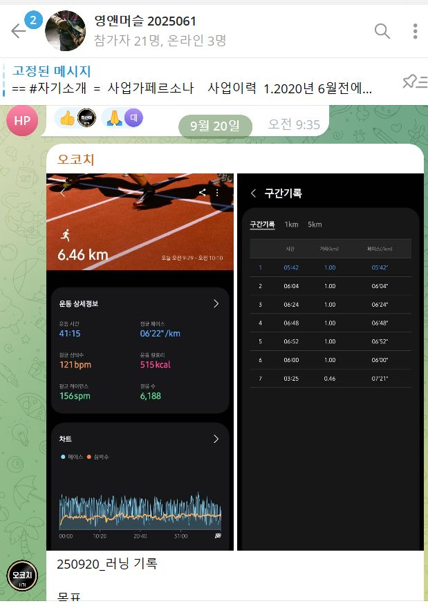
100일 독서 · 필사 · 함께 읽기
같은 문장을 남의 경험으로 읽는 걸 보면, 혼자서는 절대 안 보이던 게 보인다.
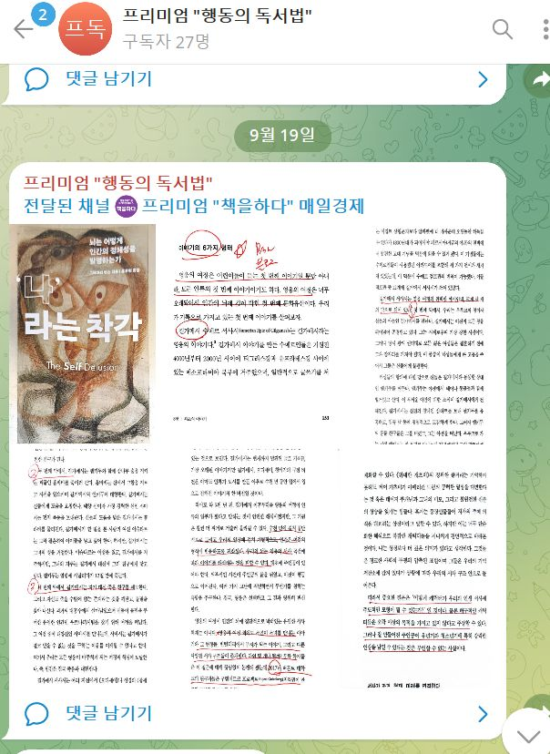
글쓰기
쓸 수 있게 되면 팔 수 있게 된다. 자기 이야기를 못 하는 사람은 자기 것도 못 판다.
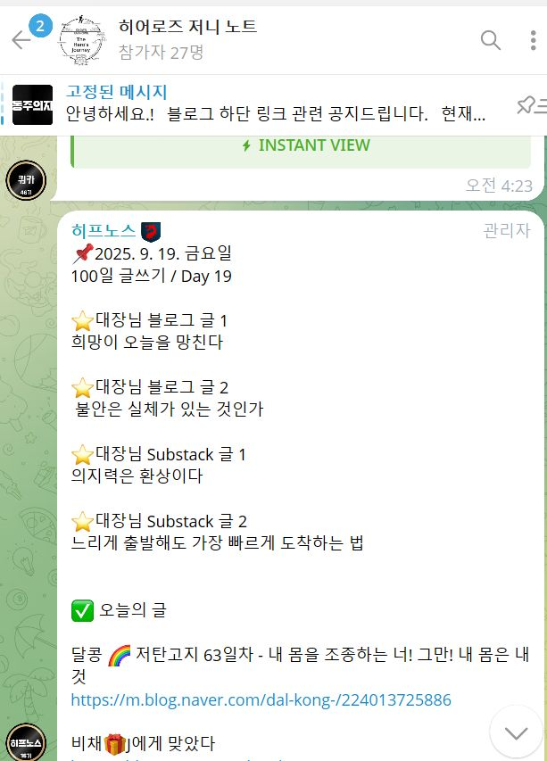
영화 · 음악
취미가 아니라 관점 훈련이다. 보는 눈이 좁으면 파는 것도 좁아진다.
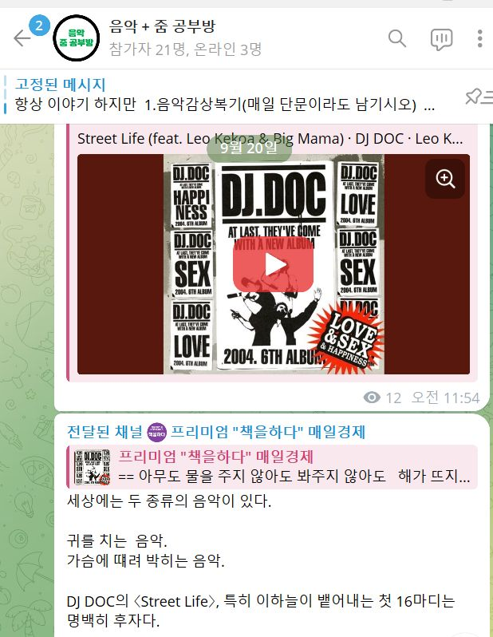
AI
도구가 바뀌는 속도를 혼자 따라가는 건 이제 불가능하다.
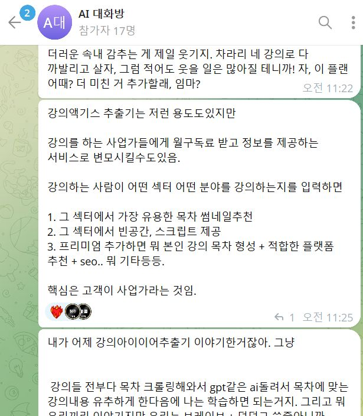
사업 복기 · 발표 · 피드백
여기가 심장이다. 앞의 여섯 개는 전부 이걸 하기 위한 준비운동이다.
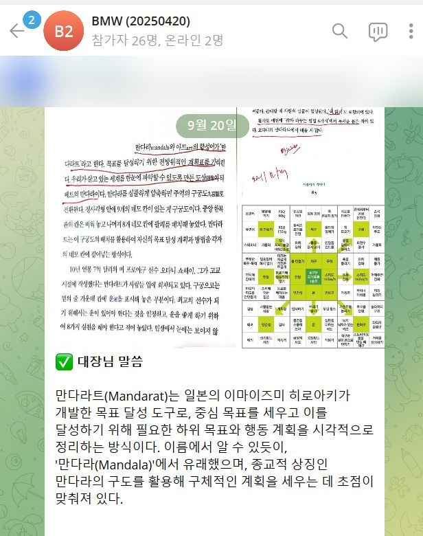
이 외에도 이런 방들이 돌아간다.
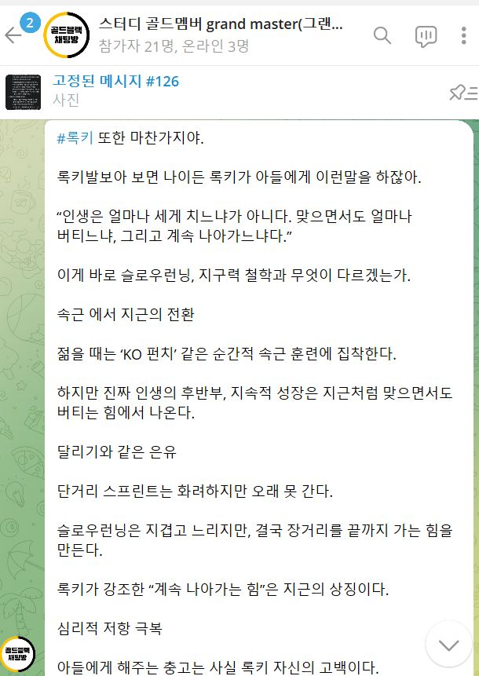
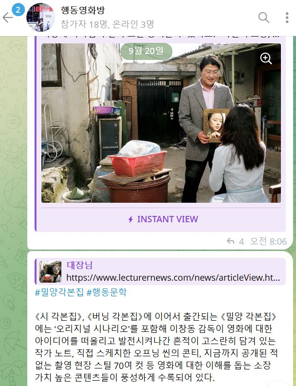
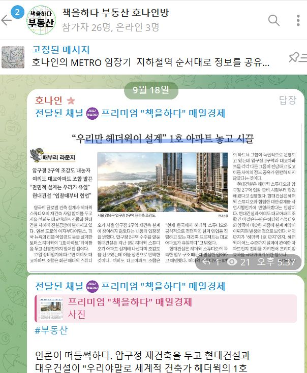
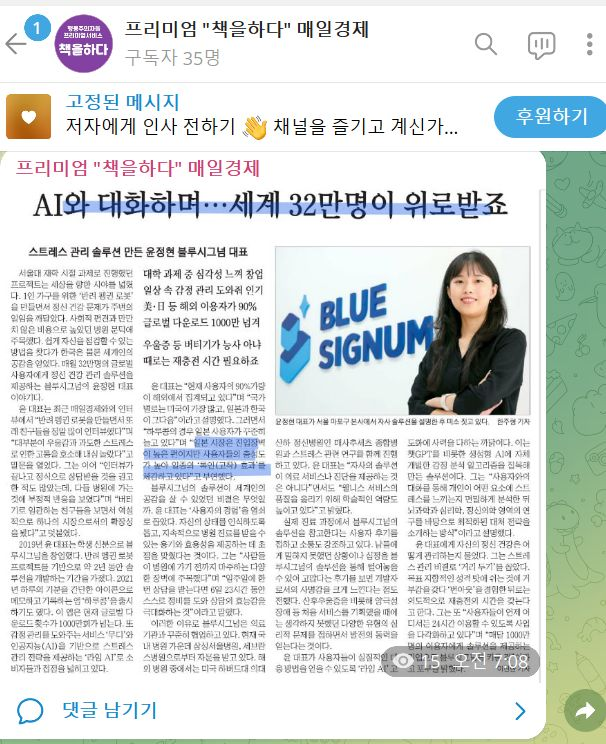
전부 실제 화면이다. 개인정보와 얼굴은 가렸다.
기상, 독서, 운동, 음악, 게임, 강의, BMW. 6년 동안 해온 활동과 기록을 AI로 다시 엮었다. 모임 안에서 직접 만든 웹서비스로 매일 쓴다.
같이 일어나고, 같이 읽었다.
100일 오디션, 방, 매주 복기. 의지가 필요 없게 만들었다.
쌓인 강의와 기록을 AI로 다시 꺼내 판단에 쓴다.
카드를 누르면 실제로 어떻게 작동하는지 볼 수 있다.
같은 강의를 들어도 누구는 흘려듣고, 누구는 다음 주의 행동으로 바꾼다. 여기서는 듣고 끝내지 않는다.
예를 들면 11월 3일. 대장님과 잠원에서 신사동까지 보낸 하루가 영상 전자책 한 권, 학습만화 31편, 그리고 11월 8일 BMW 강의 9개 장이 됐다.
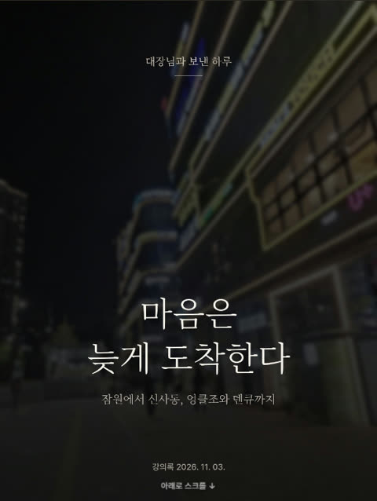
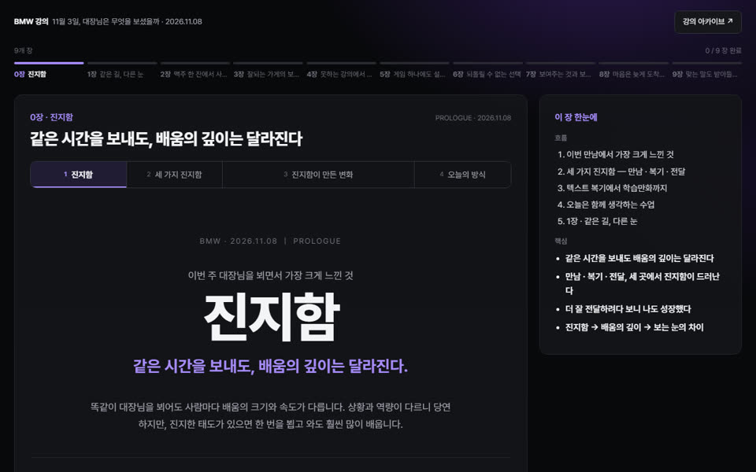
강의 95편, 쇼츠 75편. 밖에는 12편만 연다. 나머지는 멤버 전용이다.
사진 올리는 게 목적이 되는 순간 그 모임은 끝난다. 여기서는 일어난 다음, 읽은 다음에 뭘 했는지를 묻는다.
열두 개 방의 방장은 대부분 멤버다. 나는 모든 사람이 강사가 될 수 있다고 생각한다. 자기가 할 수 있는 걸 찾고, 강의로 만들어보고, 피드백을 받으면서 팔 수 있는 재능으로 바꾼다. 실제로 여기서 시작해 나와 함께 사업을 만든 사람들이 있다.
블로그 글 하나로 시작한 모임이 사업이 됐고, 2024년에는 주식회사가 됐다. 나는 해본 것만 말하고 안 해본 건 말하지 않는다. 다만 해본 게 남들보다 좀 많을 뿐이다.
나는 "된다"고 말하지 않는다. 된 사람을 보여준다.
아래는 내가 쓴 글이 아니다. 한 사람이 100일을 네 번 연속으로 끝내면서 직접 남긴 기록이다.
2023년 3월부터 2024년 1월까지. 400일이다.
말보다 기록이 빠를 거다.
모임에서 시작된 행동은 지금 여덟 개의 사업이 됐다.
전부 멤버가 직접 운영한다. 눌러보면 안다.
거르려고 쓰는 말이 아니다. 서로 시간 낭비하지 말자는 말이다.
1년 전의 나와 지금의 나는 얼마나 다른가.
지금부터 1년 뒤는 어떻게 될 것 같나.
모집글은 없다. 영업도 없다. 다만 선언이 있다.
궁금한 게 있으면 블로그 글에 댓글을 달아라. 내가 직접 본다.
아직 문의는 부담스러우면, 여기부터 봐도 된다.
책을하다 — 무료 텔레그램 채널
조만간 연다. 언제인지는 모른다.
미리 문의 남겨두시기 바람.